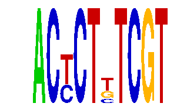

family_13 |
|---|
|  |
| Download PWM |
| Download instances (motifs) |
| Show motif distribution |
Query_ID | Query_Consensus | Subject_Name | Source_DB | Subject_ID | Length | Orientation | Offset | Divergence | Overlap | Subject_Consensus |
|---|---|---|---|---|---|---|---|---|---|---|
| family_13 | ACTCTTTCGT | CENPB | HOCOMOCO | CENPB_HUMAN.H10MO.D | 17 | as given | 5 | 0.702 | 5 | TTCGTWNNANGCGGGWN |
Sequence | Start_position (from start) | Start_position (from end) | Average conservation | Best conservation score | Instance_with_best_CS | Best_Z-score | Instance_with_best_ZS | Strand |
|---|---|---|---|---|---|---|---|---|
| chr8:124668100-124670200 | 739 | 749 | 0.2063 | 0.344 | ACYCTKTCGT | 16.249956 | ACYCTKTCGT | 1 |
| chr12:53900200-53902100 | 656 | 666 | 0.002 | 0.003 | ACYCTYTCGT | 16.249956 | ACYCTKTCGT | 1 |
| chr11:54874000-54877200 | 689 | 699 | 0.0103 | 0.024 | ACYCTKTCGT | 15.773352 | ACYCTYTCGT | -1 |
| chrX:99208600-99210900 | 1685 | 1695 | 0.0042 | 0.009 | ACYCTYTCGT | 15.773352 | ACYCTYTCGT | 1 |
| chr3:65238900-65240700 | 1424 | 1434 | 0.2352 | 0.334 | ACYCTYTCGT | 15.773352 | ACYCTYTCGT | 1 |
| chr2:68052000-68054200 | 817 | 827 | 0.0017 | 0.004 | ACYCTKTCGT | 16.249956 | ACYCTKTCGT | 1 |
| chr4:42970200-42974000 | 2435 | 2445 | 0.0061 | 0.011 | ACYCTYTCGT | 16.249956 | ACYCTKTCGT | 1 |
| chr2:94174000-94175700 | 453 | 463 | 0.0026 | 0.006 | ACYCTKTCGT | 16.249956 | ACYCTKTCGT | 1 |
| chr9:24567490-24568490 | 648 | 658 | 0.0052 | 0.01 | ACYCTYTCGT | 15.773352 | ACYCTYTCGT | 1 |
| chr18:83227000-83228881 | 1201 | 1211 | 0.0478 | 0.058 | ACYCTYTCGT | 16.249956 | ACYCTKTCGT | 1 |
| chr5:51927800-51929200 | 755 | 765 | 0.2852 | 0.968 | ACYCTYTCGT | 16.249956 | ACYCTKTCGT | 1 |
| chr16:50877500-50878600 | 932 | 942 | 0.007 | 0.011 | ACYCTKTCGT | 16.249956 | ACYCTKTCGT | 1 |
| chr16:72383536-72384536 | 154 | 164 | 0.0006 | 0.002 | ACYCTYTCGT | 15.773352 | ACYCTYTCGT | -1 |
| chr17:75134343-75135343 | 1010 | 1020 | 0.0075 | 0.011 | ACYCTYTCGT | 16.249956 | ACYCTKTCGT | 1 |
| chr12:12614268-12615900 | 1413 | 1423 | 0.2558 | 0.835 | ACYCTKTCGT | 16.249956 | ACYCTKTCGT | 1 |
| chr6:18601300-18602819 | 1449 | 1459 | 0.0007 | 0.003 | ACYCTKTCGT | 15.773352 | ACYCTYTCGT | 1 |
| chr2:76880114-76881800 | 538 | 548 | 0.3443 | 0.565 | ACYCTYTCGT | 16.249956 | ACYCTKTCGT | 1 |
| chr7:74194700-74196946 | 662 | 672 | 0.0022 | 0.008 | ACYCTYTCGT | 16.249956 | ACYCTKTCGT | -1 |
| chr17:89039500-89040690 | 544 | 554 | 0.0092 | 0.012 | ACYCTYTCGT | 16.249956 | ACYCTKTCGT | 1 |
| chr14:30857900-30860100 | 1247 | 1257 | 0.024 | 0.067 | ACYCTKTCGT | 16.249956 | ACYCTKTCGT | 1 |
| chr12:60048228-60049228 | 143 | 153 | 0.0077 | 0.033 | ACYCTYTCGT | 16.249956 | ACYCTKTCGT | -1 |